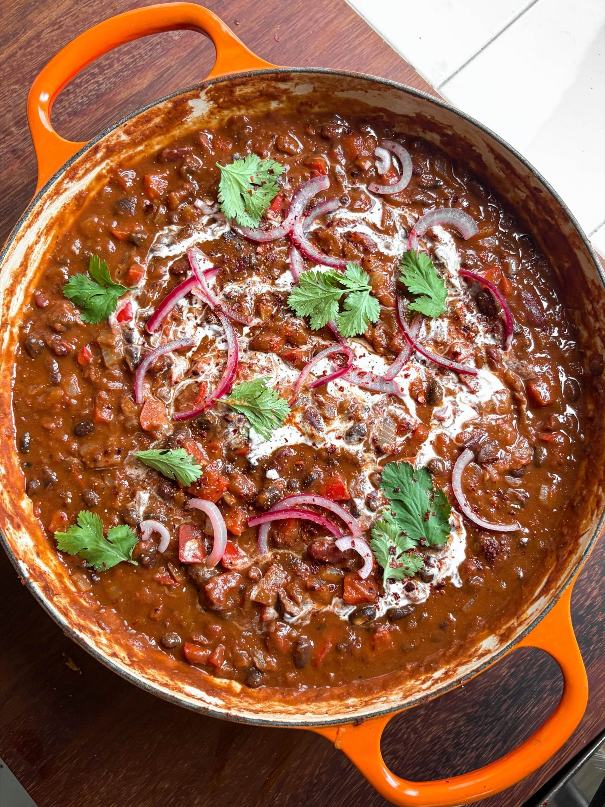

The Ultimate Smoky Double-Bean Chilli
A meat-free chilli of black and red kidney beans slowly simmered with ancho and chipotle chillies, warm spices and dark chocolate in a rich tomato base.

Ingredients
To serve
Method
Stops your screen dimming and locking while your hands are busy. It switches off when you leave this page.
- Soak the 1 dried ancho chilli in hot water to soften.
- Heat the 3 tbsp olive oil in a large heavy-bottomed pan over a medium heat.
- Add the 2 large onions and 2 red peppers and cook for 8-10 minutes, until soft and translucent — give them time.
- Add the 4 garlic cloves and cook for another minute, until fragrant.
- Stir in the 2 tsp ground cumin, 2 tsp smoked paprika, 1 tsp ground cinnamon, ½-1 tsp chilli powder and 1 heaped tbsp chipotle chilli paste.
- Cook for 1-2 minutes to toast the spices, adding a splash more oil if needed.
- Lift the ancho chilli out of the water, roughly chop it and add it to the pan with the 2 tbsp tomato purée.
- Cook for 2-3 minutes, stirring frequently, until the purée deepens in colour. Add a splash of water if it starts to stick.
- Stir in the 400g chopped tomatoes, 250ml stock, 1 tbsp Worcestershire sauce and 20g dark chocolate.
- Tip in the 570g jar of black beans and the 700g jar of red kidney beans, both with their liquid, and stir well to combine.
- Bring to a gentle simmer, then reduce the heat to low.
- Cook uncovered for 40-50 minutes, stirring occasionally, until the chilli has thickened and the flavours have melded.
- If you are serving with rice, get it on to cook while the chilli simmers.
- Check the chilli for seasoning once it is rich and thick.
- Divide the rice between bowls and spoon the chilli over the top.
- Top with natural yoghurt or sour cream, sliced avocado, pickled red onions, coriander and grated cheddar or crumbled feta, then finish with a squeeze of lime.
Notes
- The ancho chilli is optional, but it adds a real depth of smoky heat.
- Better the next day — it only improves as it sits, so it is a good one to make ahead.
- Crunchy tortilla chips are great for dunking.
- Most Worcestershire sauce contains anchovies; use a vegetarian version to keep it meat-free, and swap the topping dairy for plant-based alternatives to make it vegan.
Source: https://boldbeanco.com/blogs/beanspo-recipes/the-ultimate-smoky-bean-chilli